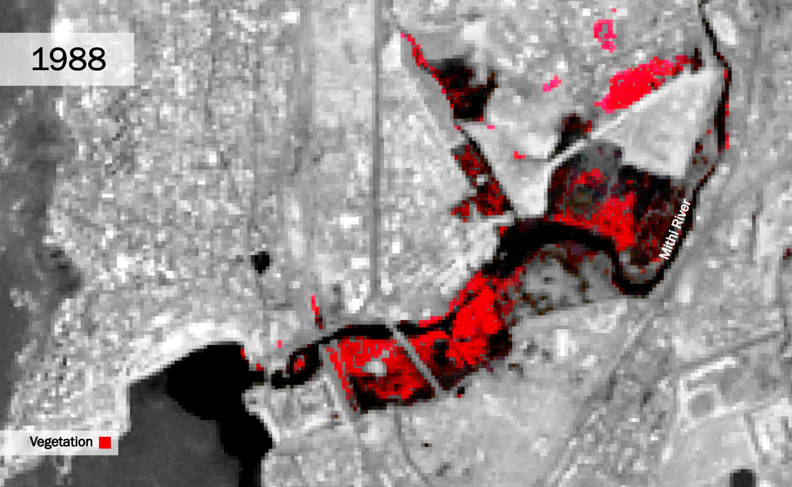
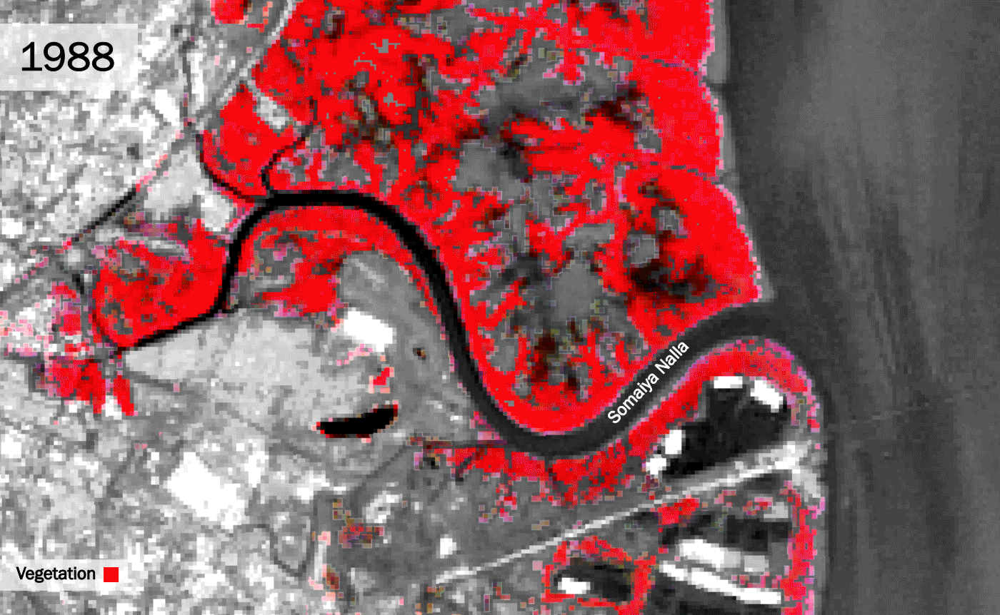

Side by side images show the conditions during Mumbai's catastrophic floods of July 26, 2005 (left) and August 29, 2017 (right)
Sources:BBC News and The Guardian
Sources:BBC News and The Guardian
Introduction
On July 26, 2005 944 millimeters of rain fell over the course of 24 hours in Mumbai, India.1
Nearly twelve years later, on August 29, 2017, history repeated itself with 468 millimeters of rain over the course of 12 hours.2
Although Mumbai is accustomed to handling the impacts of an annual monsoon season, these particular instances brought levels of rain far above that of a normal monsoon, and with that came floods that devastated both the City and its people. Several factors have contributed to the increase of flooding in Mumbai in the early twenty-first century; ranging from the impacts of climate change, to the City’s nineteenth century drainage system which was implemented under colonial British rule.
3
One of the most notable causes of the increased flooding in Mumbai has been the role of rapid urbanization in the destruction of greenspace along coastal waterways, including the City’s mangrove swamps. Having once lined the City’s coastal waterways, mangrove swamps are tidal areas where small salt tolerant evergreen trees cluster.4
These areas serve as one of Mumbai’s most unique and critical coastal ecosystems; functioning as a system of drainage and protection by creating a natural barrier, defending the City from coastal hazards such as monsoons, storm waves, cyclones, and tsunamis.
5
In his essay “The Politics and Poetics of Infrastructure” Brian Larkin argues that infrastructures are built networks; systems which provide the foundation upon which modern societies are built, and generate the framework within which everyday life unfolds.
6
However, by studying the causality of catastrophic flooding in Mumbai, the idea that infrastructures must be “built” is challenged.Many natural features, while un-built, function as infrastructures none-the-less. As these infrastructural ecosystems exist within nature, their importance is often overlooked by human societies who see them as a nuisance on land which could otherwise be commodified. However, the infrastructural system in Mumbai which is responsible for storm water drainage depends upon not only the human built drains, but also the City’s mangrove swamps and other greenery along coastal waterways. During the construction of the City’s current storm water drainage system in the mid-nineteenth century, the infrastructural effects of the existing mangrove swamps were taken into account. Therefore, the land reclamation that resulted in their significant reduction has added a burden which the built drainage system was never designed to handle.
7
Just like the human built storm water drains, Mumbai’s mangrove swamps serve as a piece of infrastructure, and therefore they must be maintained and respected. The effects of their eradication during the late twentieth century has had a delayed impact which was not fully realized until the flood of 2005, and then again during the flood of 2017. However, the lack of mangrove swamps has left the storm water drainage system unable to handle the increased rains and rising sea levels. Without this critical infrastructural ecosystem on which the built infrastructures relied, the system as a whole has failed, and the human impacts have been tragic.
Tidal Area Degredation: Formal & Informal Depletion of Wetlands & Mangrove Swamps
Originally a network of seven islands, much of modern day Mumbai is built upon flood-prone land reclaimed from the sea. Mangrove swamps once lined the City’s costal waterways, but both informal and formal construction practices have played a role in their reclamation and destruction. With the growth of the middle class in the mid-1980’s came a building boom with new regulations and an emphasis on slum redevelopment that often overlooked, or even allowed for, formal construction projects on the City’s mangrove swamps.8
Additionally, a significant number of the City’s informal settlements, which house approximately 65% of the population, are located on natural flood plains and former mangrove swamps throughout the City, as well as in areas blocking previously constructed storm water drains and rendering them useless.9
The adverse impacts of monsoons, and the potential for flooding, have also worsened due to the construction of not only buildings, but larger built infrastructures. The construction of a network of coastal roads has covered up many of the drains and demolished large swaths of mangrove swamps. This level of carelessness during the construction of government sanctioned infrastructural systems is not seen in the City’s more affluent suburbs, where the majority of drains remain open and the impacts of flooding are less catastrophic.
10
Methodology: The final GIFs were created with the use of Esri ArcGIS, Adobe Photoshop, and Adobe After Effects. The data comes from the United States Geographical Survey’s Landsat Level-1. The particular Landsat mission used varies by year between Landsat 5, Landsat 7, and Landsat 8. The decision was made to render the imagery in infrared after experimenting with both false urban and infrared band combinations in ArcGIS. The final infrared display layers Band 4 (Red), Band 3 (Green) and Band 2 (Blue) for Landsat 5 and Landsat 7, and Band 5 (Shortwave Infrared 1), Band 4 (Near Infrared), and Band 3 (Red) for Landsat 8. Theses infrared band combinations more vividly display vegetation, making the receding greenery along coastal waterways easier to see.
In order to make the final GIFs easier to read the images were edited in Adobe Photoshop before being exported to Adobe After Effects to be animated. In addition to minorly altering each image’s brightness, contrast, and color balance to make them match across years, the red vegetation layer was separated from the rest of the image to make it stand out by allowing for the rest of the imagery to be gray scale. This contrast between the grayscale background and vivid red vegetation allows for the images to be quickly read and understood within the GIF format.
The three large scale study areas were identified by eye based on to process of collecting and analyzing the Landsat data displayed in the GIFs below. Although during the course of this study data was pulled for every available year between 1988 and 2017, some of the Landsat data was not high enough quality to be included in the final products and therefore some years are skipped. Imagery was also pulled for both March, during the dry season, and September, during the wet season. The imagery utilized here is all from the dry season as a comparison of the two showed that the dry season imagery was better equipped to showcase the decrease in the greenery along the coastal waterways than the wet season imagery.
For the first small scale GIF covering the entirety of Mumbai, Landsat data is shown up to 2017. However, as it is visually evident that the vast majority of change detectable by this method happened from 1988 to 2001, the following three large scale study area GIFs were made only with imagery to 2001. This increases their effectiveness, as the viewer does not have to watch the imagery stagnate from 2001 to 2017 and can instead focus on the rapid change that happens in the years shown.
This method was successful at communicating the deterioration of the City’s coastal green areas, but it came with one key limitation. Essentially, the method which was employed to utilize and analyze the Landsat data for this study did not allow for the types of greenery along the City’s coastal waterways to be independently identified. Therefor, although the mangrove swamps are the most critical of these tidal infrastructural ecosystems, these visualizations show the reduction of all greenery along the coastal waterways, and not just the mangrove swamps.

An animated GIF of infrared Landsat data showcases the change of vegetation overtime from 1988 to 2017 across the city of Mumbai
Source: Anna Stokes
Data Source: Landsat-5, Landsat-7, and Landsat-8 data courtesy of the U.S. Geological Survey

Source: Anna Stokes
Data Source: Landsat-5, Landsat-7, and Landsat-8 data courtesy of the U.S. Geological Survey
An animated GIF of infrared Landsat data showcases the change of vegetation overtime from 1988 to 2001 in proximity to the Mithi River
Source: Anna Stokes
Data Source: Landsat-5, Landsat-7, and Landsat-8 data courtesy of the U.S. Geological Survey

Source: Anna Stokes
Data Source: Landsat-5, Landsat-7, and Landsat-8 data courtesy of the U.S. Geological Survey
An animated GIF of infrared Landsat data showcases the change of vegetation overtime from 1988 to 2001 in proximity to the Somaiya Nalla
Source: Anna Stokes
Data Source: Landsat-5, Landsat-7, and Landsat-8 data courtesy of the U.S. Geological Survey
Source: Anna Stokes
Data Source: Landsat-5, Landsat-7, and Landsat-8 data courtesy of the U.S. Geological Survey

An animated GIF of infrared Landsat data showcases the change of vegetation overtime from 1988 to 2001 in proximity to Mallad Creek
Source: Anna Stokes
Data Source: Landsat-5, Landsat-7, and Landsat-8 data courtesy of the U.S. Geological Survey
Source: Anna Stokes
Data Source: Landsat-5, Landsat-7, and Landsat-8 data courtesy of the U.S. Geological Survey
Human Impacts
The map created here displays seventy geocoded news articles written about either the July 25, 2005 (red markers) or August 29, 2017 (teal markers) floods. The articles cover both horrible impacts of the floods as well as remarkable displays of human resiliency. Through the exploration of this map, the impacts of both floods can be seen, and a comparison of the where geographically each had the largest impact can be identified.Methodology: There is not much spatial data regarding the impacts of the floods of 2005 and 2017 on the people of Mumbai. Therefore, in an attempt to see spatial human impacts news articles were geolocated and mapped based on the mention of a significant event or circumstance happening at a location mentioned. The news articles displayed in this map were all collected manually. They were geolocated through with the use of google maps, and were then mapped based on the longitude and latitude points found.
This method, although successful in producing a thought provoking map, came with many limitations. First, as many locations were larger areas, such as neighborhoods or roadways, the locations on this map are not exact. Secondly, as these articles were collected in 2017, there were many more articles accessible for the August 29, 2017 flood available then were available for the July 25, 2005 flood. This is likely a consequence of the passing of time, as opposed to an indication concerning levels of media attention or flood severity. Lastly, only articles in English were collected which may have a significant impact on the media sources and what they have chosen to report.
Human Impact Map: Interactive points show locations of events as mentioned in news articles
Conclusion
The original idea behind this project was to find a correlation between where the infrastructural ecosystems and mangrove swamps along Mumbai’s coast had been destroyed, and what parts of the City experienced the largest level of human impact. Although areas within proximity to the Mithi River showed a clear correlation between these two sets of data, a strong correlation was not found in the other two areas. It seems as though the negative impact of construction over Mumbai’s mangrove swamps may not necessarily adversely affect the people in closest proximity to that land the most. Instead, as the City’s drainage system is dependently linked network of infrastructures (both built and unbuilt), the water which is stuck may build up in places near or far from its previous exit; be it a reclaimed mangrove swamp or a built drain which has been built over and effectively closed.Due to this finding, the focus of this study shifted from this idea of spatial correlation, to one that questioned the idea of infrastructures being only things which are “built”. Mumbai’s mangroves were considered to be a key infrastructural ecosystem in the past when the original storm water drainage system was designed, and they should be again. The issues of flooding in Mumbai will not be resolved through only built infrastructural interventions. Instead, it is crucial to the wellbeing of the City that the mangrove swamps be restored, and that environmental protection policy changes be implemented and enforced.
Please note: footnotes not visible on mobile.
Return to Student Projects